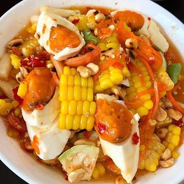
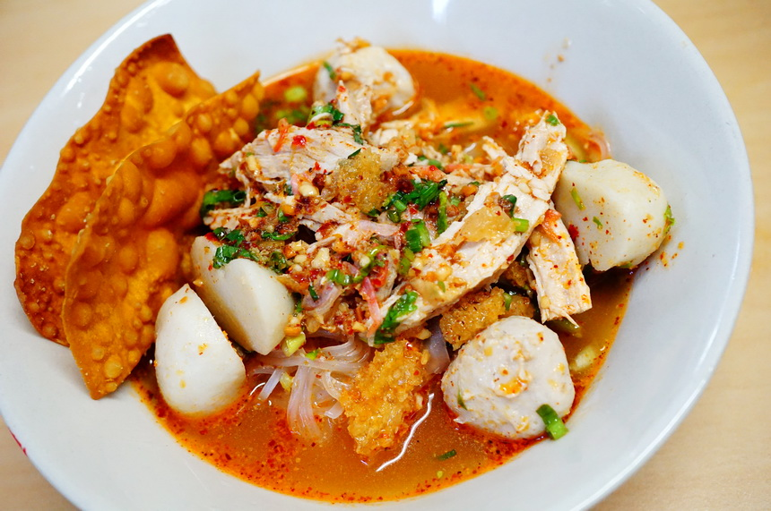
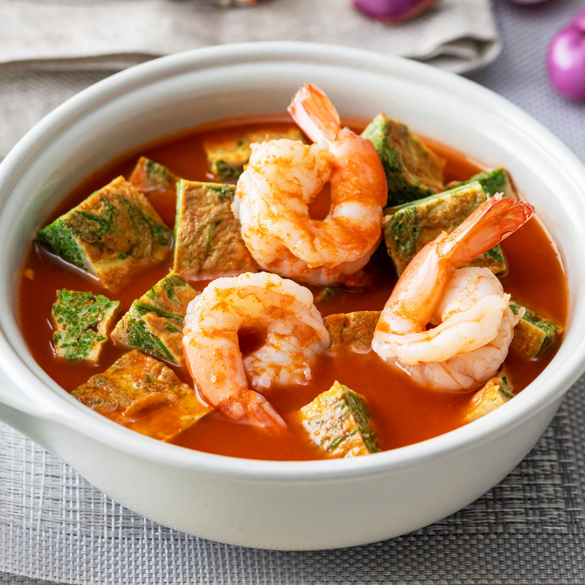

{My-Fav-Food}

ส้มตำข้าวโพดไข่เค็ม
อาหารภาคอีสานแต่มีการประยุกต์ใหม่เปลี่ยนจากเส้นมะละกอมาเป็นข้าวโพด แซ่บอีหลี่เด้อคับ!!!

ก๋วยเตี๋ยวต้มยำ
ก๋วยเตี๋ยวรสแซ่บ รสจัดจ้านมีความเผ็ดและกลมกล่อม

แกงส้มชะอมกุ้ง
เป็นเมนูที่นิยมประจำร้านอาหารทั่วไป มีรสที่จัดอยู่พอประมาณใส่กุ้งและชะอมเข้ากันได้ดีสวดๆเลย